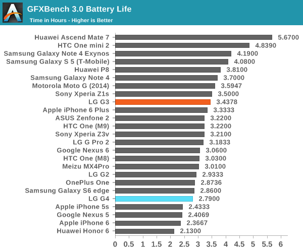

Camera
The Lg G4 camera was a massive improvement over the iPhone 5. With a double of megapixels, there is a much stronger promise of detail. It holds up well to those promises with a strong balance of sharpness and noise reduction. The f1.8 Aperature was a strong improvement over the f/2.4 of the iPhone 5, allowing much more light in. It also includes laser autofocus, allowing fast autofocus by literally shooting lasers! How cool is that? It also has OIS, improving stabilization for both images and video, allowing faster shutter speeds for more light intake.
The video quality was certinly excellent too, with an option for 4k video, allowing 4x as much detail as 1080p video. The front camera was good, with much higher MP count of 8MP, and bigger pixels, however, even though it wasn't as noisy in low light, there was a lot of face retouching, giving the "beauty face" look, reducing detail. In many situations, the higher 8MP count was essentially useless.
| Primary |
16 MP, f/1.8, 28 mm, laser autofocus, OIS (3-axis), LED flash |
| Features |
1/2.6" sensor size, 1.12 µm pixel size, geo-tagging, touch focus, face/smile detection, panorama, HDR |
| Video |
2160p@30fps, 1080p@30fps, HDR, stereo sound rec |
| Secondary |
8 MP, f/2.0, 1/4" sensor size, 1.12 µm pixel size, 1080p |
Indoors
Indoors, the LG g4 errs toward the warmer side. It is the best out of all its competitors in capturing the lowlights and highlights, everything is in balance. However, the colors are less accurate than the Galaxy S6.
Night
During the night time, the Lg g4 has the opposite showing. The Bridge is clearly overexposed. My own experience, I tended to see exactly the same results. The G4 tends to have much higher ISO than necesarry, increaseing the sensitivity of the camera, overexposing and increasing noise. The colors were also off, with a much yellower picture than necessary.
Detail
All phones were set to HDR here in an attempt to keep the exposure of the tree and the sky balanced. Howeer, that worked to the Lg G4's disadvantage. The way the G4 processes HDR makes it so that it takes more pictures for a longer period of time. For absolutely still subjects, this would prove instrumental in having a strong HDR, however in this case the tree was moving, and thus makes the image look blurry. Not only that, the leaves are clearly oversharpened, skewing the natural look seen on the Nexus 5X and the iPhone. The color reproduction was again off, with a leaning towards orange instead of the more accurate red taken by the iPhone. It is still a usable image, just not quite as good as its competition.
Macro
For macro photos, all phones do well. The G4 is very sharp, but the color is a little bit too cool. The grasshopper is not as green as the G4 makes it out to be. The Galaxy S6 and the Nexus 5x proved better in capturing the detail, but the differences are minor. All phones did considerably better than the iPhone, which has a much blurrier shot than the rest.
Crop
This photo was compared in order to measure the level of croppability. As in, which image is the most usable when cropped all the way in. The G4 does well in keepign a stabilized shot,thanks to the OIS. However, again the colors are off. The red shirts are much too bright. The detail is also a little smudgy, most likely due to agressive noise reduction.
Night
The manual mode of the Lg G4 is easily the best feature of it for me. The level of control allowed on it is excellent, especially for smartphones at the time. No other phone produced the image quality of its manual mode. ISO, Shutter speed, White Balance, and focus can all be easily adjusted. This was truly impressive.
Display and Size
The Lg G4 was a continuation of a design refinement process started with the LG G2. The G2 was impressive during the time for its minimal bezels with the biggest screen possible. The Lg g4 had a longer display compared to the wideness of the G3, a good quality that made the display appear more "normal". It forgone the glossiness of the 3 for a more subtle approach. The G4 felt quite comfortable in hand, feeling "just right". Lg would continue to keep this overall size and decrease the size of the bezels to allow for a bigger screen. The customizable backs was also a big feature of the G4, with options for plastic or leather backs. I chose the red colour, and am quite satisfied for its better looks and grip.
Performance and Battery life
On the newest Android update availible for the Lg G4, Nougat, the battery life stays a bit lower than the 2.79 hours tested as shown below. Although not very consistent, the G4 tends to have a 2.5 hour screen on time. Both results are not very good. Battery life is another weak point of the G4. However, it does have a replaceable battery, something that doesn't exist for most smartphones out today. Compared to the unibody sleek approach in most current smartphones, the G4 was more utilitarian. This feature certainly aged well and helps counterbalance the reduction in battery life on the newest update.

The G4 performed favorably relatve to the competition of its time, however, time has not been kind to it. In 2017, the Snapdragon 808 does not hold up as well as the 800.It was well-performing for its time, but today on the G4's Nougat update, performance is often stuttery, and it struggles to keep apps in memory. Compared to the iPhone 5 on its newest update, the G4 is not as usable.
Conclusion
The Lg G series changed a lot over the years, with the G4 placing LG near the top of the smartphone fight when it comes to cameras. The manual mode introduced in the Lg G4 was powerful in shaping the foundation of their camera customizability on the V series that would be released later. The V series retains the photo manual features, and introduces video manual features. However, many aspects of the G4 does not age well, such as the battery and performance. The Snapdragon 808 processor was quite unfortunate to be released at the time, due to the massive problems surrounding the Snapdragon 810. Nonetheless, the design customizability and allowance of a battery replacement stand as tresured relics of the time.